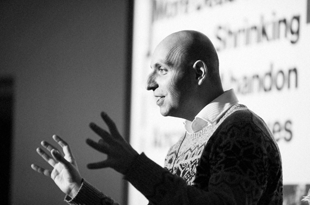
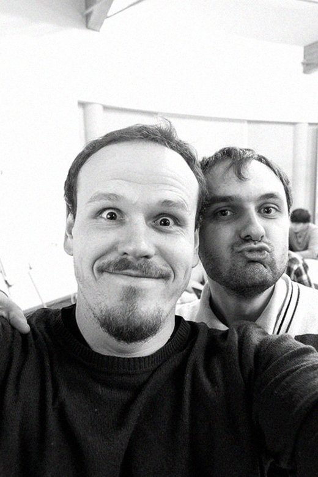
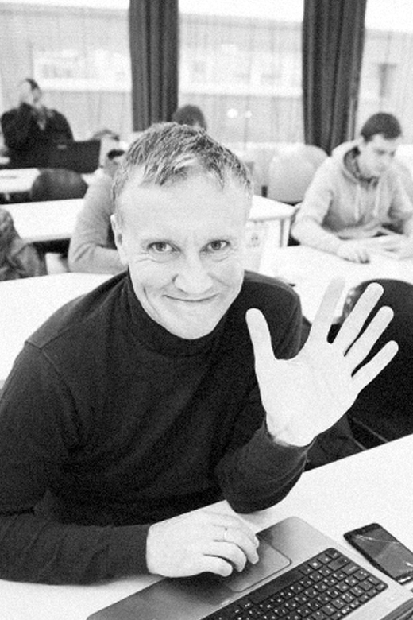
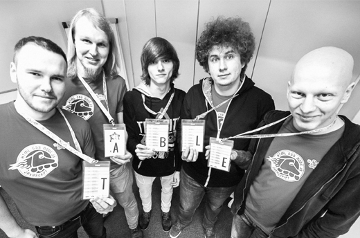
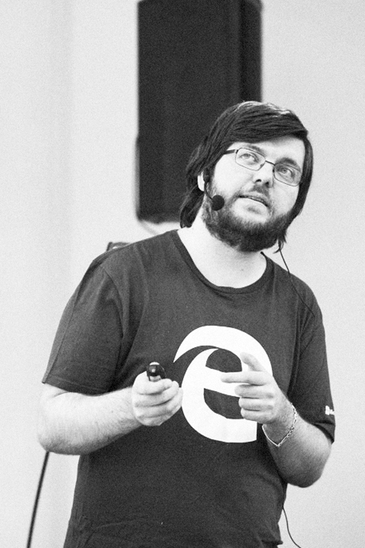
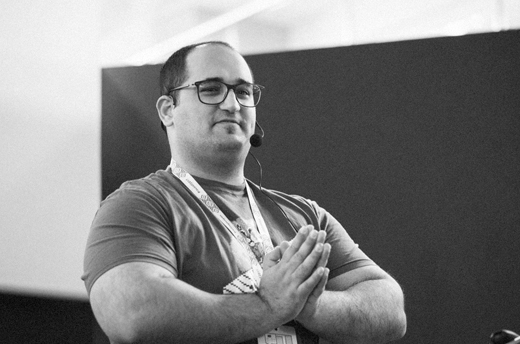
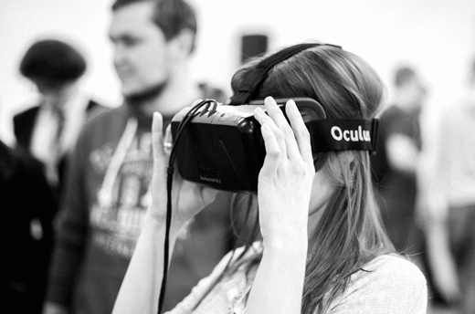
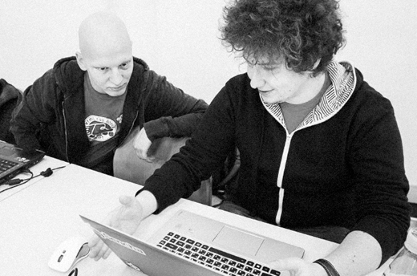

The Rolling Scopes
Conference
10–11 February 2018
Two full days of delicious content – Workshop Saturday and Conference Sunday – for amazing people of the front-end scene.
On behalf of Minsk front-end/JavaScript community, The Rolling Scopes crew is glad to announce the upcoming RSConf2018 front-end conference! February 2017 was too awesome to do it just once :)
Read the review about RSConf 2017 and watch the video on our Youtube channel.
Speakers
Martin Splitt
Zürich, Switzerland
Asim Hussain
London, United Kingdom
Anna Selezniova
Minsk, Belarus
Ivan Jovanovic
Belgrade, Republic of Serbia
Vsevolod Shmyrov
Moscow, Russia
Konstantin Krivlenia
Minsk, Belarus
Vasiliy Vanchuk
Minsk, Belarus
Alexey Migutsky
Berlin, Germany
See all speakers
Venue
Praspiekt Niezaliežnasci 25, Minsk
Minsk is the capital and the largest city in Belarus with population over 2 million. It is a progressive, modern and clean place that's easy to become fond of.
Learn more about the city, food and attractions.
Join our Slack channel #rsconf and follow us on Facebook and Twitter to be the first to learn the news.
If you don't have access to frontendbelarus.slack.com, please, register here: www.frontendbelarus.herokuapp.com
WHAT THEY SAY
Cissy The Fox @foxcissy · February 19, 2017Hey #rsconf2017 -" how you doin?" - don't forget to check @mozilla's booth and take a picture! 📸 Do you like mine? #rsconf #rollingscopes pic.twitter.com/WF1BcODgGU
Denys Dovhan @denysdovhan · February 17, 2017Hey #RSConf2017, I have A LOT OF STICKERS and I'm open for exchange! 👀😮😱 #rsconf @rollingscopes pic.twitter.com/kSFMJYrsdW
Gabriel Mičko @gabriel_micko · February 19, 2017ECMA script history & features, async, NodeJS ⚒ @rauschma on the stage at #rsconf. pic.twitter.com/xyWQSaPyVe
Follow us on Twitter.
- 
- 
- 
- 
- 
- 
- 
- 
View all photos on Facebook.
Partners
Travel Sponsors
We would be happy to discuss any kind of partnership and gladly accept any help.
Please contact us about information and media partnership by writing an email to rolling.scopes@gmail.com
Follow us
Follow us on Facebook and Twitter to be the first to learn the news
Our hashtag on social media is #rollingscopes. Or contact us directly on our email rolling.scopes@gmail.com
Join our Slack channel #rsconf.
If you don't have access to frontendbelarus.slack.com, please, register here.